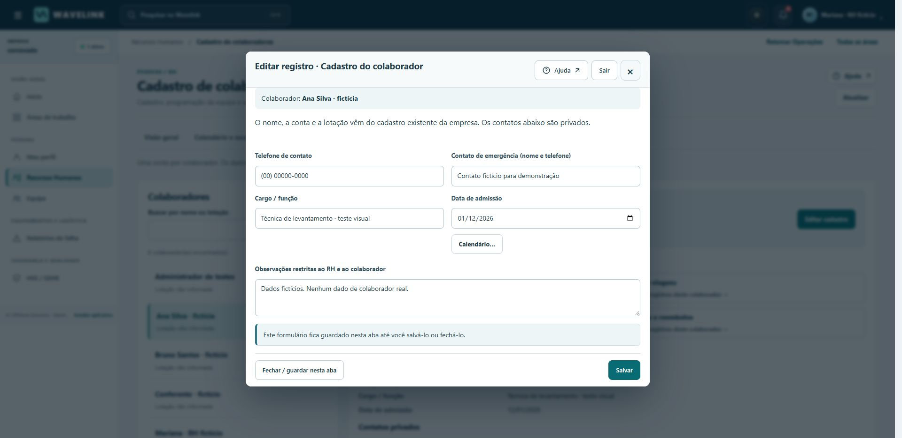
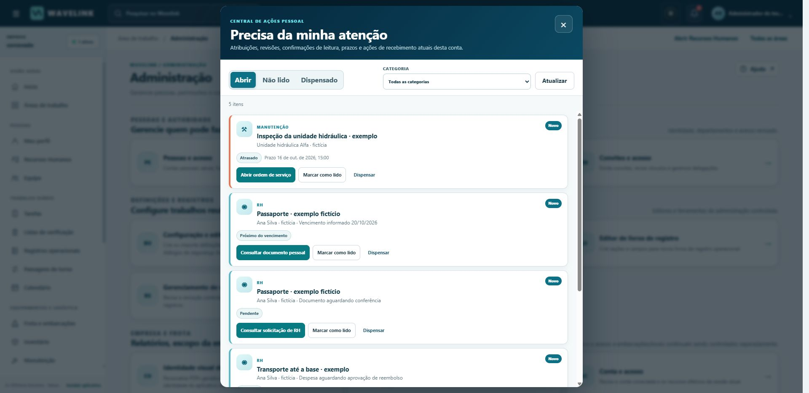
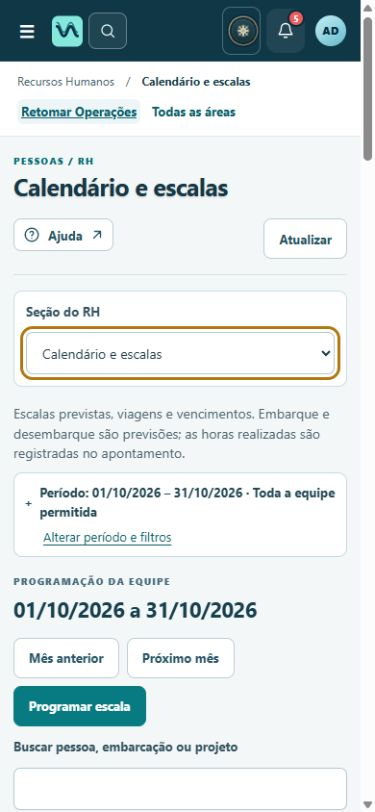
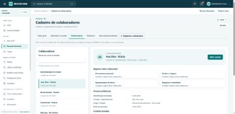
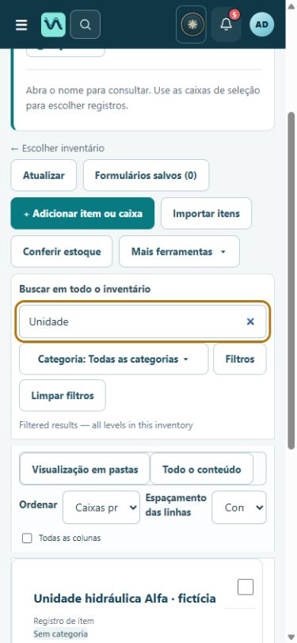

O que mudou
- Uma hierarquia compartilhada para cabeçalho, navegação, títulos, ações, campos, cartões, tabelas e abas selecionadas.
- Menu claro com texto, ícone e indicação de seleção; azul-marinho e verde-petróleo preservam a identidade do produto.
- Formulário de colaborador em duas colunas no computador e uma no celular, mantendo os mesmos campos e o mesmo processo de salvamento.
- Correção da alternância repetida no seletor móvel de RH e restauração do foco ao fechar o cadastro.
- Rótulos do inventário móvel e da central de ações em português; vencimentos formatados sem traduzir nomes ou títulos de registros.
- Foco visível, estados por texto, respeito a conteúdo oculto por permissão, movimento reduzido e cores forçadas. Nenhuma nova fonte ou imagem externa foi adicionada.
Início e navegação
Cabeçalho compacto, menu lateral claro, atalhos com ícones distintos e indicadores alinhados. A imagem offshore original permanece, com menos peso visual.
Calendário e escalas
Mesmo calendário funcional da UI123, agora com títulos, filtros, abas, linhas e indicadores coerentes com as outras áreas. Não se presume disponibilidade pela ausência de escala.
Cadastro do colaborador
Identidade, vínculo profissional e contatos privados ficam em grupos claros. Rótulos, botões e espaçamentos seguem o mesmo padrão do restante do sistema.
Inventário
Resumo e busca antes da lista. Cada inventário tem uma linha mais fácil de percorrer; no detalhe, o contexto aparece antes das ações.
Manutenção
Título, ação principal, filtros, lista de ordens e resumo têm níveis visuais distintos, com menos bordas sobrepostas.
Meu perfil
Painel de identidade claro sobre a imagem original, corrigindo contraste e mantendo o reconhecimento visual existente.
Formulários, notificações e celular
Cadastro: campos agrupados e ações persistentes
Central de ações: categorias e vencimentos em português
RH e navegação · 390 px
Formulário do colaborador · 390 px
Inventário e rótulos · 390 px
Referências e escolhas
As referências orientam padrões de organização; a interface e os recursos visuais continuam próprios do Wavelink. Não houve acesso a demonstrações autenticadas desses produtos nem reprodução de seus ativos.
| Fonte oficial | Padrão útil e aplicação |
|---|
| Senior · Escala e horários; Afastamentos | Separar cadastro, programação e ocorrências. No Wavelink, escala planejada e horas apontadas continuam processos distintos, com filtros e relatórios específicos. |
| TOTVS · FP1350, lotação | Lotação indica a vinculação organizacional; não substitui o local de uma escala. A página foi identificada na pesquisa anterior; o acesso direto apresentou restrição. |
| Mintra · OCS HR | Planejamento marítimo reúne pessoa, período, local e requisitos. O calendário preserva esses eixos e permite abrir o registro; documentos vencidos e conflitos têm texto explicativo. |
| Fracttal · BI | Filtros e contexto dão significado aos indicadores. Adotamos resumos com escopo e acesso ao registro, mantendo contagens reais da aplicação. |
As páginas oficiais de Senior, Mintra e Fracttal foram consultadas novamente nesta revisão; demonstrações e imagens públicas haviam orientado a UI123. A adaptação desses padrões ao Wavelink é uma decisão de projeto, não uma declaração dos fornecedores.
Glossário adotado
| Termo | Significado na interface |
|---|
| Cadastro de colaboradores | Dados profissionais vinculados à conta já existente. |
| Lotação | Vinculação à unidade ou departamento; distinta de embarcação ou local temporário. |
| Escala planejada | Períodos e situações previstos. Não comprova horas trabalhadas ou presença. |
| Jornada / apontamento de horas | Jornada é o período de trabalho previsto ou aplicável. Apontamento registra as horas informadas para análise; não constitui folha de pagamento. |
| Embarque / desembarque | Início e término previstos do período embarcado, conforme as datas da escala. |
| Gestão documental / conferência | Enviar um documento não significa que ele foi conferido. Validade informada e situação da conferência aparecem separadamente. |
| Despesa apresentada / reembolso aprovado | Apresentação inicia a análise. Aprovação autoriza o reembolso no fluxo; não comprova pagamento. |
O que foi efetivamente testado
73 verificações automatizadas aprovadas. Formulários, calendário, filtros, idioma, permissões, navegação móvel e rótulos de notificações. Reconstrução completa de 2.275 recursos conferida por hash.
No Chrome local: colaborador, gestor de RH, perfil operacional e administrador; busca e abertura de registros, calendário, perfis, fila de análise e relatórios, retorno de RH à mesma ordem de serviço, rascunho → retomada → salvamento de cadastro e fechamento com foco restaurado. Nas telas móveis verificadas a página não apresentou rolagem horizontal global. A tabela/calendário conserva sua área própria de navegação quando necessária.
Esses testes mostram que os caminhos verificados continuam funcionando. Não medem ganho de produtividade de usuários reais nem substituem auditoria completa de acessibilidade ou teste em aparelhos físicos. Os testes de negócio mais extensos da UI123 permanecem como evidência histórica; não são contados novamente nesta entrega.
Preservação e reversão
Base: commit 85d79a84b1c9c3393a2a1f8bae720af704dbfa76. Mesmos serviço, disco, banco, usuários, permissões, anexos e rascunhos. Nenhuma limpeza de dados foi executada. O usuário temporário de produção permanece.
Backup verificado antes da publicação: /var/data/wavelink-release-backups/20261018T015303Z-before-ui124, sob o proprietário dos arquivos; cópia online consistente do SQLite, integridade OK, nenhuma violação de chave estrangeira e arquivo compactado conferido. Os processos não foram parados porque esta atualização não migra nem altera dados persistidos.
Reversão visual: republicar o commit UI123 acima no mesmo serviço. Não restaurar o banco para reverter apenas a interface.
Pendências e recomendações
- Conferência autenticada no site Corcovado: a ferramenta do navegador continua bloqueada para esse domínio, apesar das permissões concedidas. O bloqueio não foi contornado.
- Testes antigos de devolução/rejeição em produção e limpeza exclusiva dos respectivos registros continuam pendentes. Manter o usuário temporário.
- Validar com profissionais de RH, grandes volumes, teclado/leitor de tela completo e aparelhos físicos antes de afirmar melhoria mensurada.
Artefatos: proveniência técnica. O pacote completo acompanha o guia, as capturas e a validação; não contém o banco ou credenciais de produção.